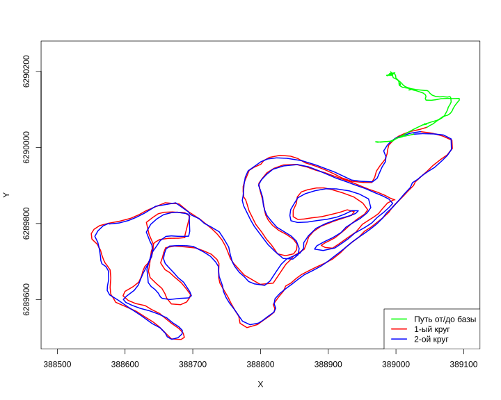

Подготовка данных и расчеты
loc <- st_read("../../../data/2022-01-09_14-00_Sun.gpx", layer = "track_points") |>
st_transform(32637)Reading layer `track_points' from data source `C:\platt\education\sevinGIS\data\2022-01-09_14-00_Sun.gpx' using driver `GPX'
Simple feature collection with 835 features and 26 fields
Geometry type: POINT
Dimension: XY
Bounding box: xmin: 37.178 ymin: 56.73616 xmax: 37.18673 ymax: 56.7426
Geodetic CRS: WGS 84loc$time <- as.POSIXct(loc$time, format = "%Y-%m-%d %H:%M:%S", tz = "UTC")
coords <- st_coordinates(loc)
x_coords <- coords[, "X"]
y_coords <- coords[, "Y"]
lt1 <- as.ltraj(
xy = cbind(x_coords, y_coords),
date = loc$time,
id = loc$track_seg_id,
typeII = TRUE,
proj4string = sp::CRS(st_crs(loc)$proj4string)
)
df <- ld(lt1)
df$speed_kmh <- round(df$dist / df$dt * 3.6, 2)
df$cum_dist <- round(cumsum(df$dist), 1)База данных, полученная из .gpx (сокращенная версия)
| x | y | date | speed_kmh | cum_dist |
|---|---|---|---|---|
| 388988.0 | 6290190 | 2022-01-09 11:00:18 | 0.04 | 0.0 |
| 388988.1 | 6290190 | 2022-01-09 11:00:23 | 0.01 | 0.1 |
| 388988.1 | 6290190 | 2022-01-09 11:00:28 | 0.00 | 0.1 |
| 388988.1 | 6290190 | 2022-01-09 11:00:33 | 0.00 | 0.1 |
| 388988.1 | 6290190 | 2022-01-09 11:00:38 | 0.01 | 0.1 |
Расчеты для 1-го круга
dist_1 <- df[["dist"]][94:395]
t1 <- df[94:395,]
dlt1 <- dl(t1)
df_t1 <- ld(dlt1)
time_1 <- df_t1 |>
summarise(finish1 = max(date, na.rm = TRUE),
start1 = min(date, na.rm = TRUE))
speed_1 <- sapply(df_t1[14], mean, na.rm = TRUE)Расчеты для 2-го круга
dist_2 <- df[["dist"]][395:690]
t2 <- df[395:690,]
dlt2 <- dl(t2)
df_t2 <- ld(dlt2)
time_2 <- df_t2 |>
summarise(finish2 = max(date, na.rm = TRUE),
start2 = min(date, na.rm = TRUE))
speed_2 <- sapply(df_t2[14], mean, na.rm = TRUE)Расчет расстояния от базы до начала круга
… и наоборот
Получилось 270.82 м туда и 445.25 м обратно
(верно скорее всего 270.82 м, потому что на обратном пути появляется крюк)
Расчет самой отдаленной точки от базы
base_point <- df[1,]
points_sf <- st_as_sf(df, coords = c("x", "y"), crs = st_crs(base_point))
base_point <- st_as_sf(base_point, coords = c("x", "y"), crs = st_crs(points_sf))
distances <- st_distance(points_sf, base_point)
max_dist_idx <- which.max(distances)
max_point <- points_sf[max_dist_idx, ]
max_distance <- distances[max_dist_idx]
max_distance[1] 764.3843Иллюстрация трека

Итоги
1 круг начинается с ускорения 8.87 км/ч
Дистанция 1-го круга составила 4522.3 метров
Средняя скорость в 1-ом круге составила 10.02 км/ч
2 круг заканчивается скоростью 8.86 км/ч
Дистанция 2-го круга составила 4538.5 метров
Средняя скорость во 2-ом круге составила 10.21 км/ч
Расстояние от базы до начала маршрута составило 270.82 метров
Расстояние от конца маршрута до базы составило 445.25 метров
Пройденная дистанция на лыжах 9046.15 метров
Полный маршрут составил 9737.87 метров
Итоговая таблица
stats_1 <- tibble(
Круг = "1",
`Трасса, м` = round(sum(dist_1), 1),
`Средняя скорость, км/ч` = round(speed_1, 2),
Старт = df[94,3],
Финиш = df[395,3]
)
stats_2 <- tibble(
Круг = "2",
`Трасса, м` = round(sum(dist_2), 1),
`Средняя скорость, км/ч` = round(speed_2, 2),
Старт = df[395,3],
Финиш = df[690,3]
)
stats <- rbind(stats_1, stats_2)| Круг | Трасса, м | Средняя скорость, км/ч | Старт | Финиш |
|---|---|---|---|---|
| 1 | 4522.3 | 10.02 | 2022-01-09 11:08:58 | 2022-01-09 11:36:03 |
| 2 | 4538.5 | 10.21 | 2022-01-09 11:36:03 | 2022-01-09 12:02:40 |